|
GeometrizeTwitterBot
1.0
Python Twitter bot for geometrizing images into geometric primitives
|
|
GeometrizeTwitterBot
1.0
Python Twitter bot for geometrizing images into geometric primitives
|
Module with functionality for locating the Geometrize executable and other dependencies. More...
Functions | |
| def | _get_geometrize_absolute_path |
| Gets an absolute path to where we expect to find the Geometrize executable. More... | |
| def | get_geometrize_executable_path |
| Gets the absolute path to where we expect to find the Geometrize executable. More... | |
| def | geometrize_executable_exists |
| Checks if the Geometrize executable exists. More... | |
| def | get_geometrize_image_folder_absolute_path |
| Returns the absolute path the bot image data folder. More... | |
| def | get_geometrize_image_file_absolute_path |
| Composes an absolute path for an image file in the image data folder. More... | |
| def | get_geometrize_script_folder_absolute_path |
| Gets an absolute path to the bot scripts folder. More... | |
| def | read_script_file |
| Reads a Chaiscript script file at the given location, returning the text content of the file. More... | |
| def | read_geometrize_script |
| Reads a Chaiscript script file out of the Twitter bot scripts folder, returning the text content of the file. More... | |
Module with functionality for locating the Geometrize executable and other dependencies.
|
private |
Gets an absolute path to where we expect to find the Geometrize executable.
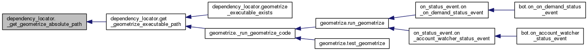
| def dependency_locator.geometrize_executable_exists | ( | ) |
Checks if the Geometrize executable exists.
Returns true if the Geometrize executable exists at the expected location, else false.
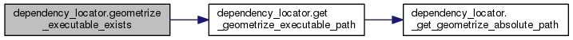
| def dependency_locator.get_geometrize_executable_path | ( | ) |
Gets the absolute path to where we expect to find the Geometrize executable.
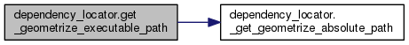
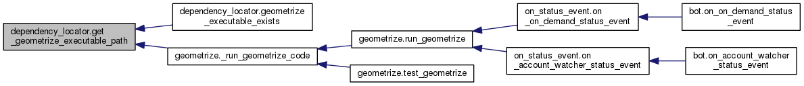
| def dependency_locator.get_geometrize_image_file_absolute_path | ( | filename | ) |
Composes an absolute path for an image file in the image data folder.
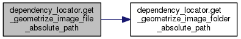
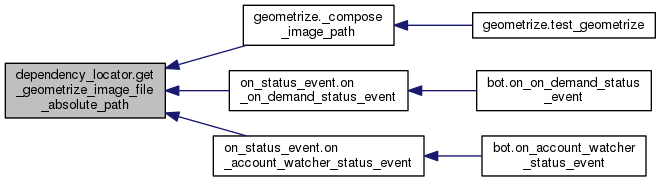
| def dependency_locator.get_geometrize_image_folder_absolute_path | ( | ) |
Returns the absolute path the bot image data folder.
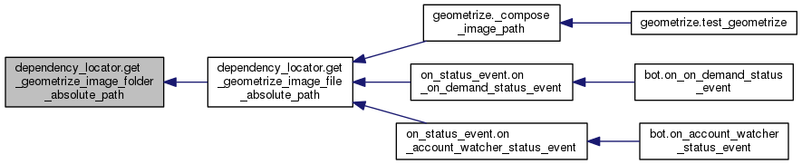
| def dependency_locator.get_geometrize_script_folder_absolute_path | ( | ) |
Gets an absolute path to the bot scripts folder.
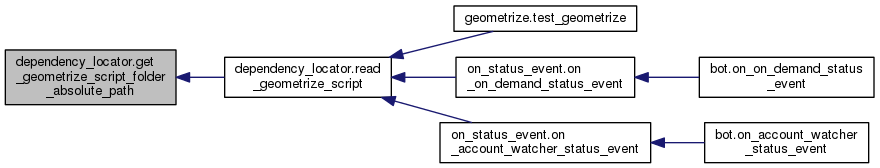
| def dependency_locator.read_geometrize_script | ( | filename | ) |
Reads a Chaiscript script file out of the Twitter bot scripts folder, returning the text content of the file.
:return An empty string if we failed to read the script.
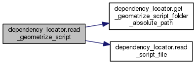
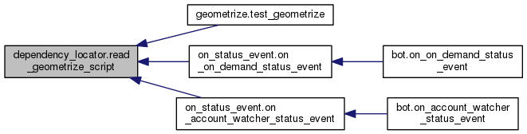
| def dependency_locator.read_script_file | ( | filepath | ) |
Reads a Chaiscript script file at the given location, returning the text content of the file.
:return An empty string if we failed to read the script.
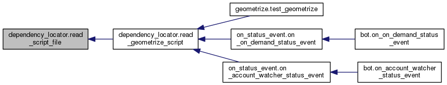
 1.8.6
1.8.6